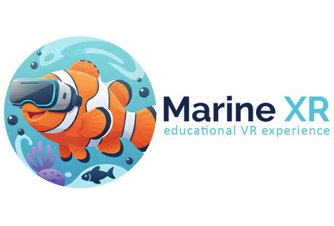

EDUCATION & ENGAGEMENT 01
Immersive Ocean Learning
Explore marine environments through virtual dives and augmented reality, bringing ocean discovery into the classroom and supporting interactive learning in the field.
Visit MarineXR
Project spotlight Marine XR